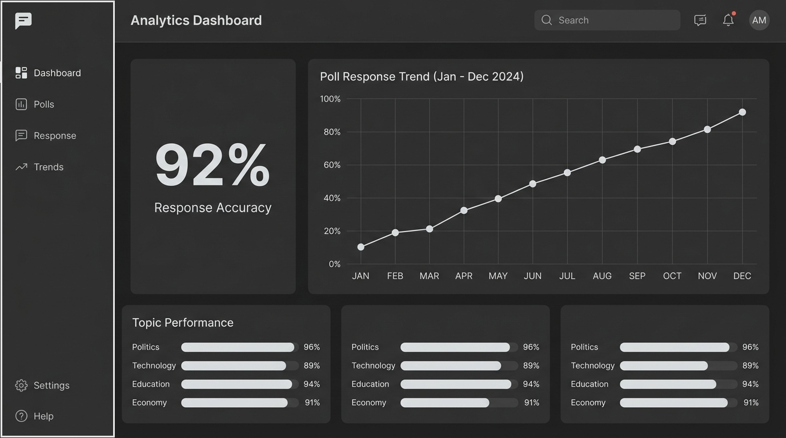

Starter
For small groups getting started
Free
No card required
- Up to 5 polls
- Participant target per poll: 1,000
- Poll and survey tools
- Shareable links and results
The polling platform that empowers organizations to publish targeted surveys and engage citizens through mobile voting — with live analytics.

IcapsQ gives organizations real participation data, without the noise. Publish, engage, analyze — all in one platform.
Filter by county, audience, or topic to reach the people your research is meant for.
Follow votes and survey responses as they arrive. Compare totals and turnout at a glance.
Let participants respond on the web or Android app through one clear, consistent flow.
Export responses as PDF or CSV for review, reporting, and sharing with your team.
IcapsQ turns raw participation into clear, actionable visuals that show you exactly what's happening across every county and demographic.
You need a solution that keeps up. That's why we developed IcapsQ. A purpose-built approach to streamline your organization's feedback collection.
Discover More →| IcapsQ | Traditional Surveys | Paper Ballots | |
|---|---|---|---|
| Real-time results | Instant live dashboards | Delayed processing | Manual counting |
| Mobile voting | Dedicated Android app | No mobile support | Physical only |
| County-level targeting | All 47 counties | Limited reach | Location-bound |
| Duplicate vote protection | Device-level verification | Basic checks | No protection |
| Live analytics dashboards | Charts, maps, trends | No dashboards | No dashboards |
| PDF & CSV exports | One-click export | Manual export | No digital records |
| Multi-language support | English & Kiswahili | Varies | Print-dependent |
The same core tools on every plan, with a poll publishing limit and participant target per poll that scale as you grow.
For small groups getting started
For researchers and professionals
For teams managing multiple campaigns
Pro and Organization are prepaid for 30 days and renew manually. All plans include the same core tools.
Whether you are a local community leader running a neighborhood poll, a university organizing student elections, a national union surveying thousands of educators, or a sovereign election observer — IcapsQ gives you cryptographic proof, real-time analytics, and fraud protection that no traditional platform can match.
Every single vote generates an immutable SHA-256 receipt stored on a tamper-proof ledger. Voters can independently verify their ballot without revealing identity.
Real-time GPS validation, IP location tracking, and device hardware fingerprinting automatically block duplicate votes, bot attacks, and spoofing attempts.
Seamless Flutter Mobile App (iOS/Android), Mobile Web, and SMS/Offline polling fallback ensure voters in remote rural regions or cities participate equally.
Watch live pie charts, bar breakdowns, and demographic maps update instantly as votes roll in. Export official signed PDF/CSV reports in one click.
Join organizations across Kenya already using IcapsQ to publish polls, engage citizens, and make data-driven decisions.